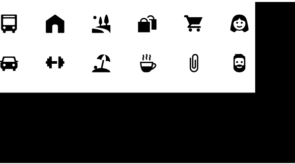

Iconography

Living in urban spaces brings various aspects of life together - means of mobility, lifestyle, nature or everyday life locations like universities, gastronomy or stores, just to name a few. For this occasion, I created an icon family which brings these aspects together in a harmonious and appealing visual style.
This project served the purpose of exploring techniques of iconography and was designed for use on mobile devices. These icons could for example be used in a lifestyle-app or on a map.